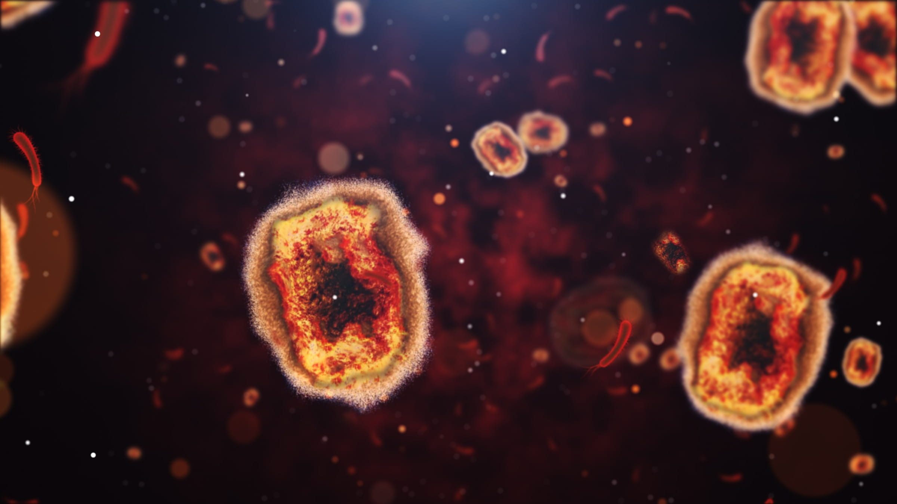
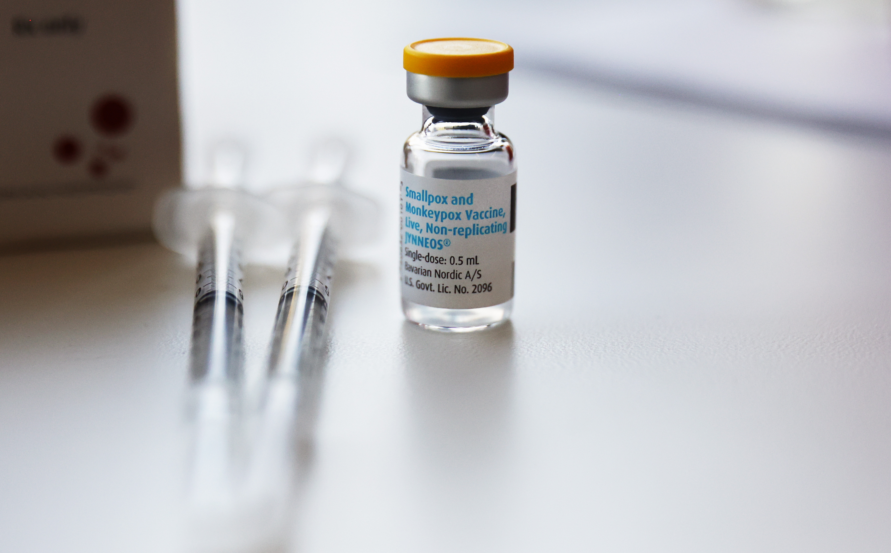
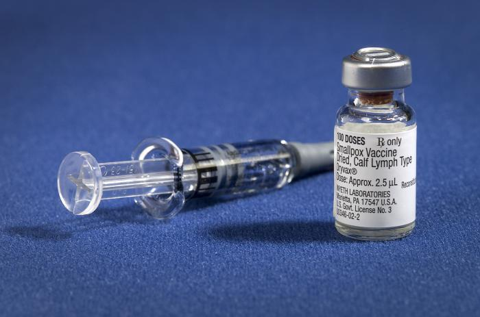

Worldwide Alerts🚨

Monkeypox Detox Oversimplified
Introduction
March 11, 2020 the Coronavirus was declared a global pandemic. These past two years were harrowing due to this ghastly virus. Paranoia haunted the lives of everyone around the globe; young and old. A global lockdown; a once in a lifetime experience. Every single face, covered by an N95 mask. The lockdown began and it felt like house arrest. What seemed to be the apocalypse was turning the human race against each other as brawls broke out in local supermarkets over toilet paper. This period of time was straight out of a horror story that has now engraved itself into the history books. In 2022, we are happy to report that coronavirus cases have steadily declined and things are starting to return to normal. Or we thought. Jul 23, 2022; the monkeypox was declared a public health emergency.
Background
The monkeypox virus is the predecessor of the poxvirus family. The poxvirus family has 83 different viruses, the most infamous being monkeypox, and smallpox. Despite the recent outbreak bringing this virus into the spotlight, it has actually been around for quite some time just like many other viruses. The first case of monkeypox was reported in 1970. Yes, that is correct. The first case was 52 years ago back when the most influential band of all time, the Beatles, had just broken up. The origin of the virus is still unknown and contrary to popular belief it is not from monkeys. The 2022 outbreak was rather unexpected as it reached numerous countries that's never reported any cases of this virus. The spread of the virus is through close intimate contact with a person or animal that has the virus. As of today, August 16th, 2022, there are a reported 38,000 cases of this virus and 12 deaths. The fatality rate of the virus is low but it is still important to educate yourself about it.
Symptoms
Symptoms for the monkeypox virus are not noticeable until 1 to 3 weeks after exposure.
Like stated in the previous paragraph the only way of getting this virus is through
intimate/close contact
with any person or animal that is infected with the virus.
Intimate contact with another individual includes:
sexual orientation, hugging, massaging,
kissing, and sharing of any bodily fuid. Also, it is suggested you take
precautions when
touching the objects used by a person who has the virus as they must be disinfected or
those objects also have a chance of spreading the virus. There are different levels to
the symptoms.
Starting off with level 1 is the flu like symptoms which are fevers,
headaches, and fatigue which could easily
be the cause of some other factor. Level 2
includes chills and swollen lymph nodes; these should alert you
but are not enough to
fully confirm it is monkeypox. Last but not least, level 3 is rashes that turn into bumps
located on various parts of the body such as feet, hands, chest, face, mouth, and
genitals. These rashes also
include scabs. If an individual has these symptoms they
should get tested by a healthcare professional.
The test can either be a blood test or
microscopic inspection of bodily fluid. These symptoms typically last
2 to 4 weeks.
In this time span the rash will be fully healed and the damaged skin will be replaced by
a new
layer of skin that forms in response to the damage.
Treatments
Unfortunately, there is no treatment directly for the monkeypox virus. There are currently two vaccines that have been approved to treat the monkeypox vaccine: the JYNNEOS vaccine and the ACAM2000 vaccine. These vaccines were known to treat other viruses from the poxvirus family and health professionals hope it can do the same for the monkeypox virus. These two vaccines have never been tested for how efficient it is at treating this virus but it is recommended in certain cases. It is very much possible to heal in the 2 to 4 week span without receiving any professional treatment as it is not as extreme or vicious as other viruses but as a whole it is our responsibility to educate ourselves and stop the spread. Last but not least, antivirals such as tecovirimat (TPOXX) are also recommended. Yet again this was used to treat other viruses from the poxvirus family and are not directly made for the monkeypox virus. It is important those with the virus isolate themselves from others and maintain proper hygiene to help the healing process.
 
Writer: Alfred Siby Cyriac
Editor: Dilver Singh
Publisher: WWA Incorporation
Worked Cited:
“Monkeypox.” Centers for Disease Control and Prevention, Centers for Disease Control and Prevention, 29 July 2022, https://www.cdc.gov/poxvirus/monkeypox/index.html.
“Monkeypox.” World Health Organization, World Health Organization, 19 May 2022, https://www.who.int/news-room/fact-sheets/detail/monkeypox.
“Monkeypox.” World Health Organization, World Health Organization, 19 May 2022, https://www.who.int/news-room/fact-sheets/detail/monkeypox.